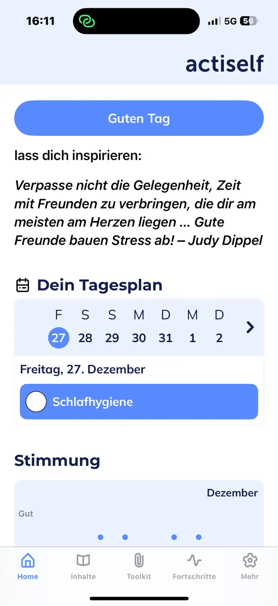
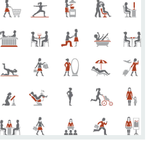

App für iPhone und Apple Watch
Aktiv für die mentale Gesundheit!
Die actiself-Anwendung …
- unterstützt dich bei der Bewältigung von Stress
- zeigt dir, wie du dich vor Überlastung schützt
- motiviert dich, aktiver zu werden und dich mehr zu bewegen
Entwickelt von Expert*innen des Max-Planck-Instituts für Psychiatrie

Für wen ist actiself?
Chronischer, hoher Stress kann zu ernsthaften Folgeerkrankungen führen – wie z.B. Burnout oder sogar Depressionen.
Bewegungsmangel ist ein zusätzlicher Risikofaktor und belastet auch deine mentale Gesundheit. Mit einem mehrwöchigen Programm hilft dir actiself, Stress besser zu bewältigen, dich mehr zu bewegen und aktiver zu werden. So kannst du dich vor Überlastung schützen und Folgeerkrankungen vorbeugen.

Stressbewältigung
Umgang mit negativen Gedanken
Schlafhygiene

Verhaltensaktivierung
Alle Inhalte sind hochwirksame und evidenzbasierte Elemente aus der Verhaltenstherapie.

Wie funktioniert actiself?
42 Übungen. Eine pro Tag. In 6 Wochen.
Das actiself-Programm besteht aus 42 Übungen zu Themen wie Stressbewältigung, Umgang mit negativen Gedanken, Schlafhygiene und Verhaltensaktivierung. In 6 Wochen kannst du so mit einer Übung pro Tag deine mentale Gesundheit fördern. Außerdem übst du mit actiself, mehr Bewegung, angenehme und soziale Aktivitäten in deinen Alltag zu integrieren. actiself begleitet dich dabei mit täglichen Fragen zu deiner Stimmung und zu deinem Schlaf.

Mit Wearables
Wir begleiten dich Schritt für Schritt auf deinem Weg zu einem besseren Wohlbefinden.
Mit Hilfe von Smartwatches wie z.B. einer Apple Watch oder Fitnesstrackern macht actiself deine Erfolge auf dem Weg zu einem aktiveren Lifestyle sichtbar und hilft dir, deine persönlichen Ziele zu erreichen. Du bestimmst dabei, was du erreichen möchtest. Gleichzeitig kann actiself durch das Monitoring mit Wearables besser verstehen, wo du Unterstützung benötigst und dir gezielter Empfehlungen geben.
So startest du
In vier einfachen Schritten
- 1
App laden
Lade actiself aus dem Apple-Appstore herunter. Die WatchOS-App wird automatisch installiert.
- 2
Anmelden
Melde dich mit einer Email-Adresse und einem Passwort an.
- 3
Bestätigen
Gib den Code ein, den du per Mail bekommst.
- 4
Freischalten
Gib deinen Freischaltcode aus unserem Shop ein – und du bist startklar!
Wissenschaftlich fundiert
Aus der Forschung des Max-Planck-Instituts für Psychiatrie
Die actiself-Anwendung ist das Ergebnis jahrelanger Forschungs- und Entwicklungsarbeit von Wissenschaftler*innen des Max-Planck-Instituts für Psychiatrie in München. Im Januar 2025 startete Biomentric mit der ersten Anwendung actiself.
Werde aktiv für deine mentale Gesundheit!
Fragen? Schreib uns an support@biomentric.zohodesk.eu oder lies die FAQs.